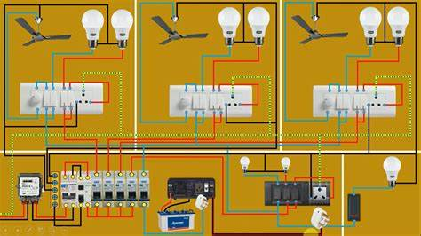

Welcome
This is a subpage that consists of House wiring.
Introduction
Power is supplied to domesticate installations through a phase and neutral, forming a single phase AC 230 v to wire system. For individual establishment power is supplied through three phase two wire system. To give 440V, the neutral is earthed at to the domestic utilities; power is fed to kilo watt meter and then to distributes power along several circuits. It also protects these circuits from over load by safety devices like fuses or circuit breakers

Elements of House Wiring
1. Fuses and circuit breakers
2. Electric switch
3. Plug
4. Socket out let
5. Lamp holder
6. Main switch
7. Incandescing Light
House wiring is a crucial aspect of any residential building, providing electrical power and connectivity to various devices and appliances. It involves the installation of a network of wires that distribute electricity throughout the house.There are different types of house wiring systems available, including traditional knob and tube wiring, aluminium wiring and modern systems like PVC and copper wiring. Each type has its own features and applications, making it important to choose the right type for your specific needs.
COMMON HOUSE WIRING REPAIRS:
1. Replacing a fuse
2. Resulting a circuit beaker
3. Resulting a switch or an out let
4. Repair of house hold appliances
Various systems of wiring:
1. Cleat wiring
2. CTS/TRS wiring (Cap tyre sheathed/Tough rubber sheathed wiring)
3. Wooden casing & capping wiring
4. Lead sheathed wiring
Conductiing Wiring
PVC casing & capping
Wiring Methods
1.Series circuit
2.Parallel Circuit
- 